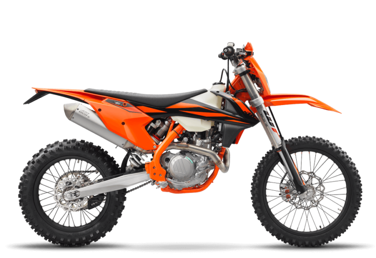
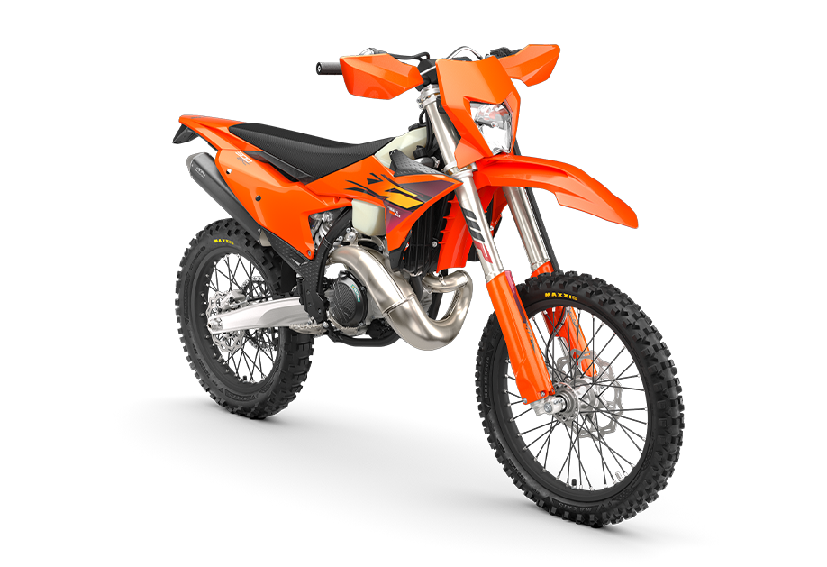
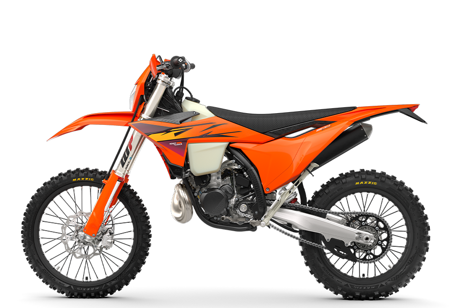

KTM EXC 300
- Kategorija: Enduro
- Brend: KTM
- Kvačilo: Wet, DDS, Multi-disc, Brembo Hydraulics
- Menjač: 6-Stepeni
- Težina: 104,6 kg
- Visina od tla: 247 mm
- Visina sedišta: 963 mm
- Zadnji disk: 220 mm
- Rezervoar: 9 l
O modelu: KTM EXC 300
Ovaj model predstavlja apsolutni vrhunac enduro inženjeringa, konstruisan za one koji ne poznaju granice. Sa svojim legendarnim dvotaktnim agregatom, KTM EXC 300 pruža neverovatan odnos snage i težine, omogućavajući trenutnu reakciju na gas koja svakog vozača ostavlja bez daha, čak i na najzahtevnijim tehničkim terenima.
Zahvaljujući naprednom vešanju i agilnoj šasiji, ovaj motocikl se ponaša kao produžetak tvog tela. Bilo da se boriš sa strmim šumskim usponima, kamenitim prevojima ili uskim stazama, EXC 300 nudi preciznost i pouzdanost koja ti daje samopouzdanje da napadneš svaku prepreku. Ovo nije samo mašina – ovo je tvoj alat za osvajanje divljine.